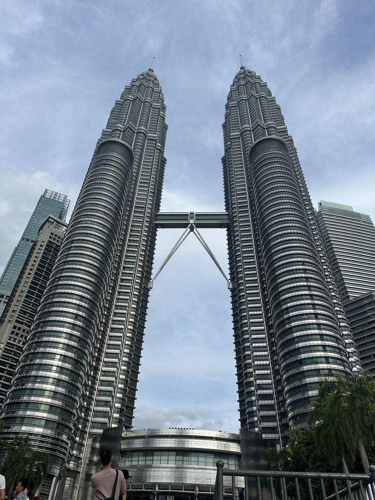
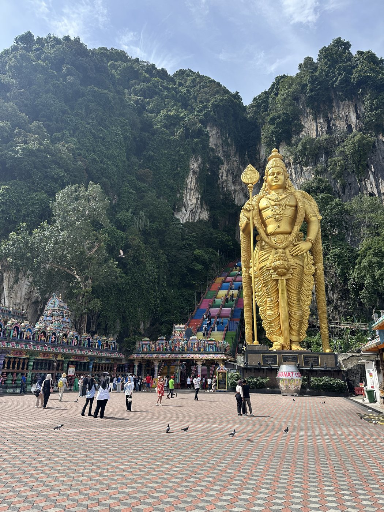
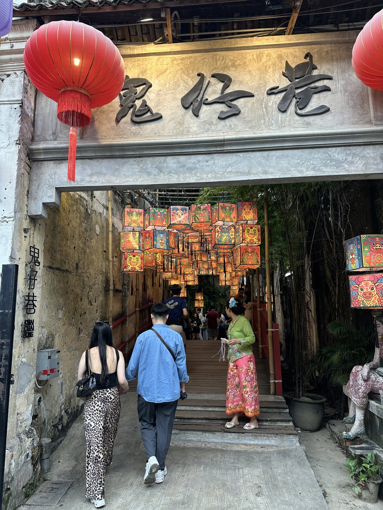
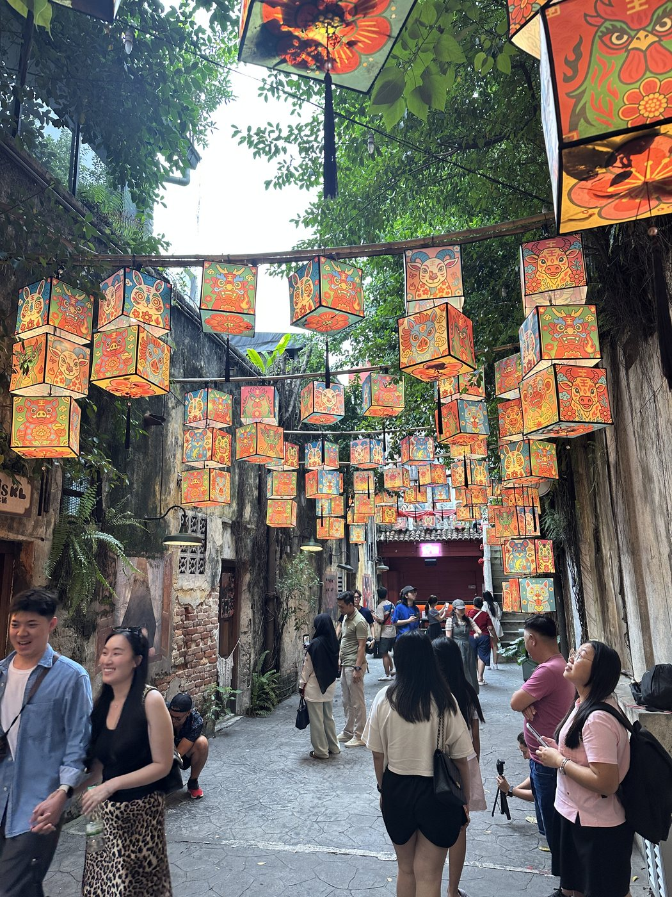
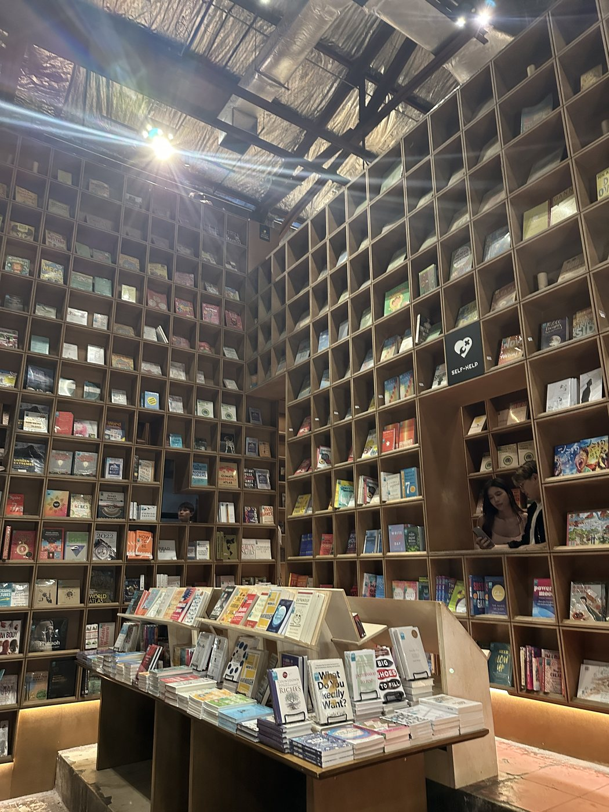
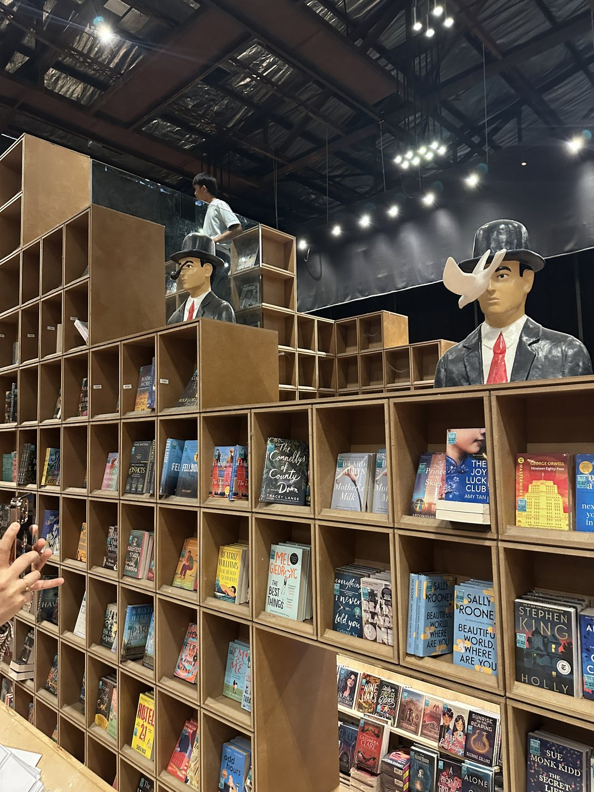
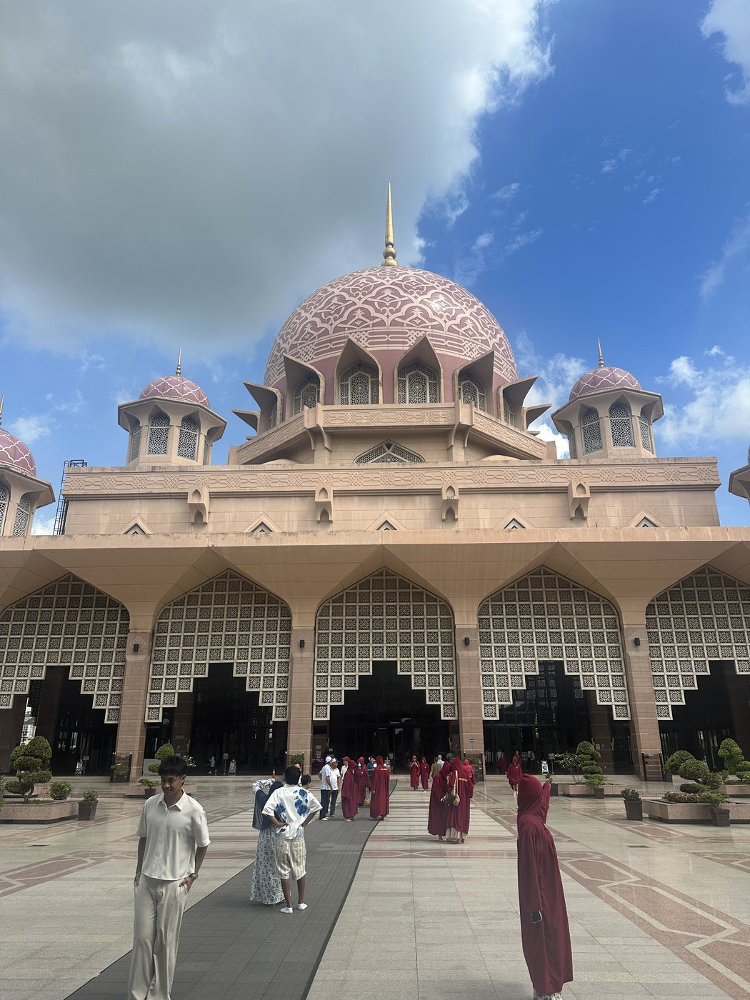
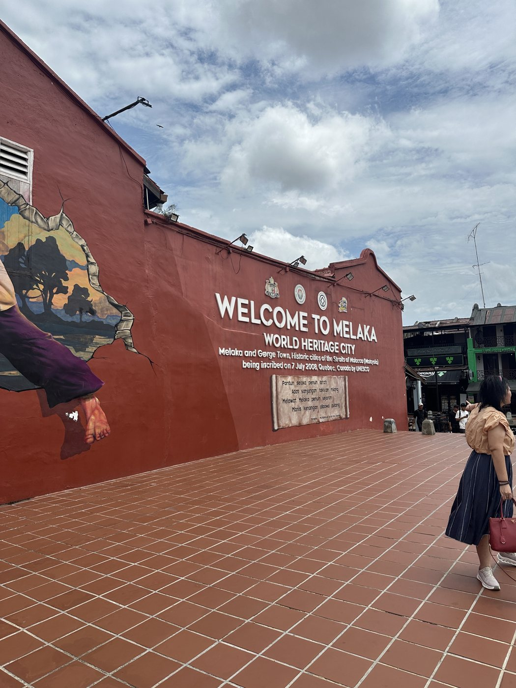
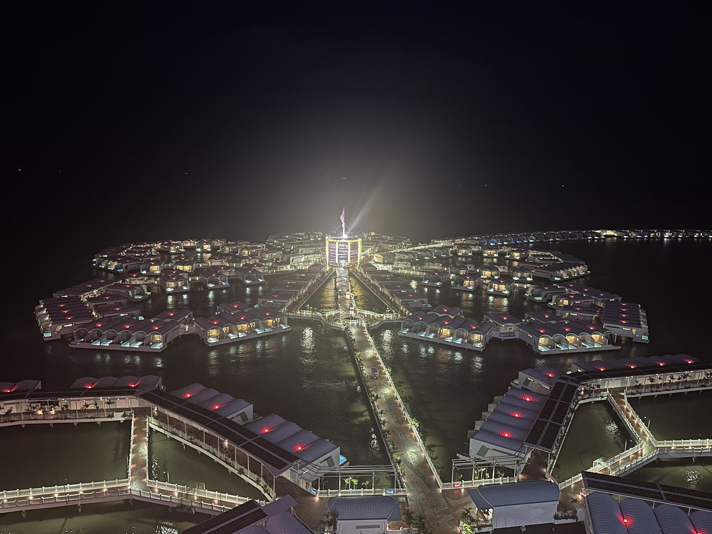

雙子星大樓 Petronas Twin Towers
吉隆坡・城市地標
雙子星大樓是吉隆坡的經典地標。兩座塔和中間的空橋，白天、夜晚都很好認；想拍全景，站遠一點比較容易把塔尖一起留下。
馬來西亞｜城市地標與南洋味道
吉隆坡看雙子星、逛鬼仔巷和迷宮書局，近郊還有黑風洞；到了布城，再看看粉紅清真寺。馬六甲老城與南洋吃買也整理在這裡。
領隊 YoYo 的旅遊收藏版 · 版面整理：2026 年 11 月 23 日
先看景點 ↗
我是 YoYo，帶團的領隊。這頁放了馬來西亞的景點照片、簡單介紹，還有吃喝和伴手禮，想查資料時可以直接翻。
黑風洞看彩虹階梯，鬼仔巷逛老街，迷宮書局找書看；布城和大紅花酒店的照片也放在下面。
吉隆坡・城市地標
雙子星大樓是吉隆坡的經典地標。兩座塔和中間的空橋，白天、夜晚都很好認；想拍全景，站遠一點比較容易把塔尖一起留下。
雪蘭莪・吉隆坡近郊
黑風洞最醒目的就是金色穆魯甘神像，後方的彩虹階梯一路通往山洞。主洞要爬 272 階，裡面可以看到印度教神殿和天然岩壁。

吉隆坡・茨廠街一帶
鬼仔巷在吉隆坡老街的店屋後方。沿著巷子走，老牆上的壁畫畫著早年華人生活，頭上則會換上不同主題的藝術裝置。入口招牌和巷內轉角，都可以停下來拍幾張。


吉隆坡・蘇丹街 Jalan Sultan・網紅拍照點
喜歡拍照，迷宮書局可以排進名單。它在蘇丹街的 REXKL 舊戲院裡，保留了挑高屋頂，也利用原本的階梯空間，把木書架安排在不同高度。
轉個彎又是另一面書牆，中間還穿插著人像裝置和不同的書封。想拍出書牆高度，可以把人和整面書架一起入鏡。


布城・布特拉清真寺
布城的粉紅清真寺，也叫布特拉清真寺。最醒目的是粉紅圓頂，往下看還有拱門和窗格上的幾何花紋；從廣場拍合照，可以把整座建築當背景。


波德申 Port Dickson・水上屋夜景
大紅花酒店的水上屋排成花瓣形狀，從高處看最清楚。晚上亮燈後，步道和屋頂沿著水面排開，燈光也映在海上。這張夜景把中央建築和兩側的水上屋一起拍進去了。

景點資料查證：2026 年 11 月 22 日；大紅花酒店補充：2026 年 11 月 23 日。下方保留官方連結，方便查詢最新資訊。
BookXcess｜REXKL 門市資訊 BookXcess｜舊戲院與迷宮書架的介紹 鬼仔巷｜官方介紹與最新布置 馬來西亞觀光局｜黑風洞 馬來西亞觀光局｜布城與粉紅清真寺旅遊手冊（PDF） UNESCO｜馬六甲與喬治市歷史城區 大紅花酒店｜官方介紹椰漿飯吃正餐，沙嗲可以分著吃，想喝熱湯就看看肉骨茶。
想帶點伴手禮回家，可以看看白咖啡、巧克力或肉骨茶包。